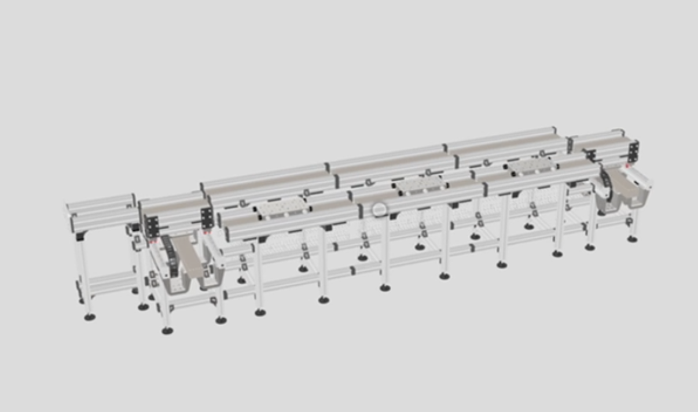

During my time at Rockwell Automation, I utilized HTML/CSS and Google Model Viewer to create an interactive web interface displaying 3D machine models. I leveraged C# and JavaScript to update models in real time with fault location detection, allowing users to safely inspect electrical cabinets without requiring a lock-out tag-out procedure.
Designed and implemented a user-level thread library scaling across multiple CPU cores by utilizing custom synchronization primitives including mutexes and condition variables. I built a robust multithreaded virtual memory subsystem that supports concurrent page faults and address translation, along with an engineered multi-threaded, crash-resistant remote file system server utilizing raw socket programming.